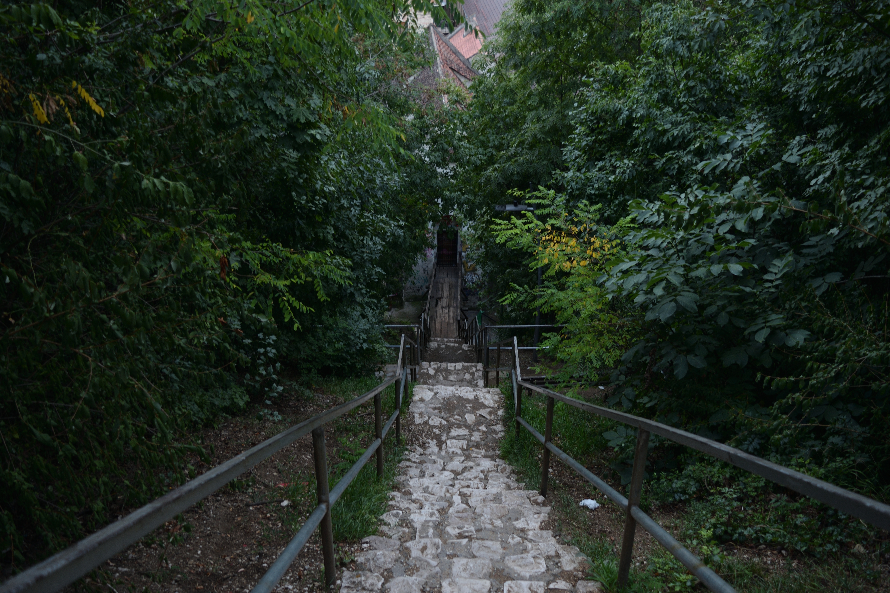
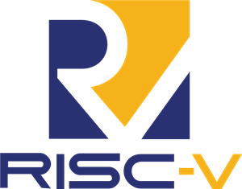

./profile
Hello! I'm Iliescu Matei, a Computer Science student based in Iasi, Romania. With a deep passion for computers, mathematics, physics, and puzzles, I strive to provide efficient solutions to all problems that come my way. From a very young age, I came in contact with the magic box called "PC", being strongly influenced by my tech-savvy family. Thus, my curiosity got the best of me, and I started researching everything about my system. First, I understood Windows and how to navigate it. Then, I understood the underlying programming languages of a ".exe" file. Slowly, but surely, I started to comprehend the architecture of a program and how I could create my own. During this time, I also began my dive into Linux and its distributions, becoming a believer in the open-source mission and a power-user of Arch. Now, studying at TUIASI, I'm happy to grasp a deeper understanding of computers, and I'm fully focused on achieving a fulfilling career in this sector of industry.
> ./projects_list

KRDSK
LiveA 2D platformer featuring a unique mechanic of controlling multiple, stackable, windows to manoeuvre the main character.
Digital Systems Control Logic
LiveAn Implementation of a Simple ALU for an FPGA Using the Digilent Basys 3 and the Vivado Framework
GTKdoku
LiveAn implementation of Sudoku using Python and GTK, created to deepen my knowledge of GTK and algorithm design.

Linux Low-level IPC Framework
LiveImplemented a low-level communication protocol based on IPC for a Battleship-like two-player videogame.

TinyRISCV
WIPAn implementation of a single-cycle RISC-V processor in Verilog.
/var/www/images
/var/log/experience
Logistics Volunteer
National Society of Red Cross from Romania
> Assisted with logistics, providing aid to refugees from Ukraine.
IT Department Volunteer
Liga Studenţilor Facultăţii de Automatică şi Calculatoare din Iaşi
> I led a team in organising a "Who Wants to Be a Millionaire?" type competition in the college.
./establish_connection
> Waiting for incoming transmission...
_